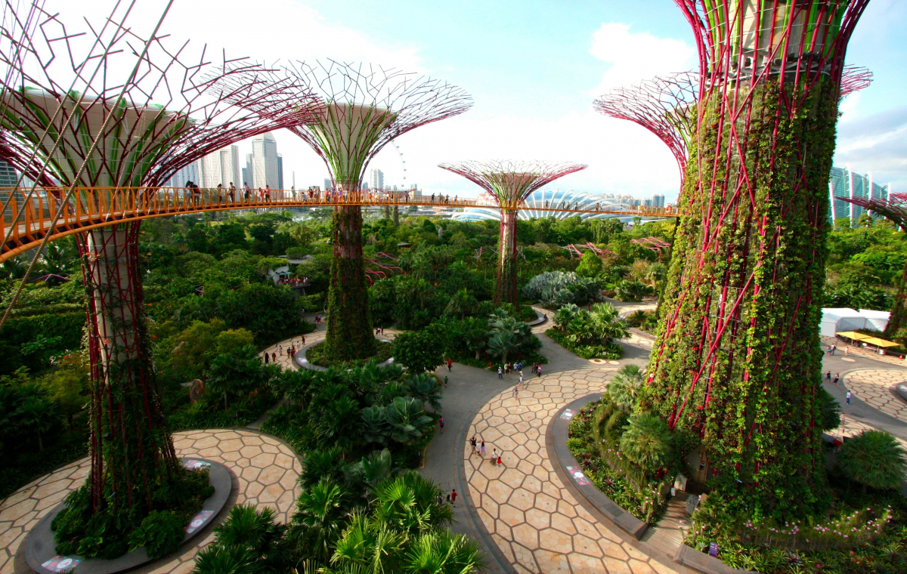

It is open every day from 5 am to 2 am, entrance is free. Supertrees are the constructions of 25-50 meters in height, which remind real trees by their shape. They are designed with large sheds that provide shade in the daytime and revive with the impressive light and sound at night. Some of the trees have the photovoltaic devices for transformation the solar energy into electrical. Every construction has plants fit for a vertical planting.
